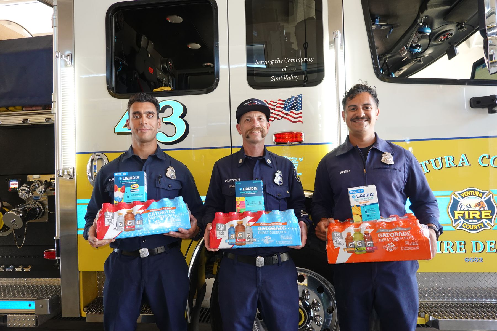
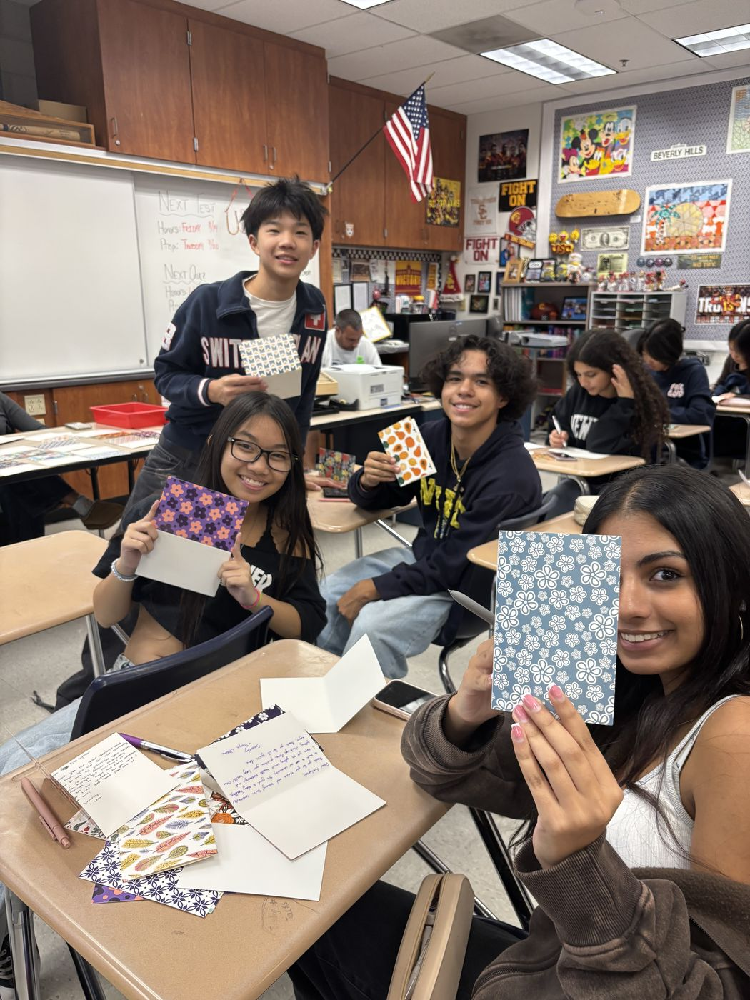
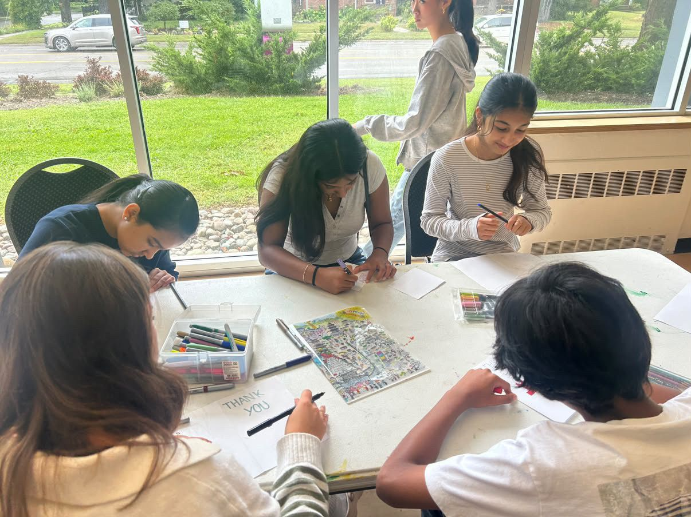
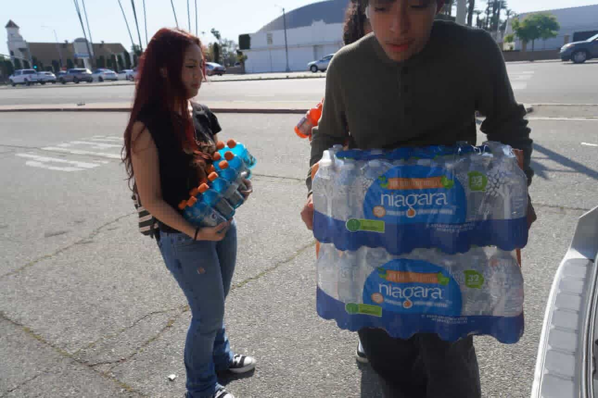
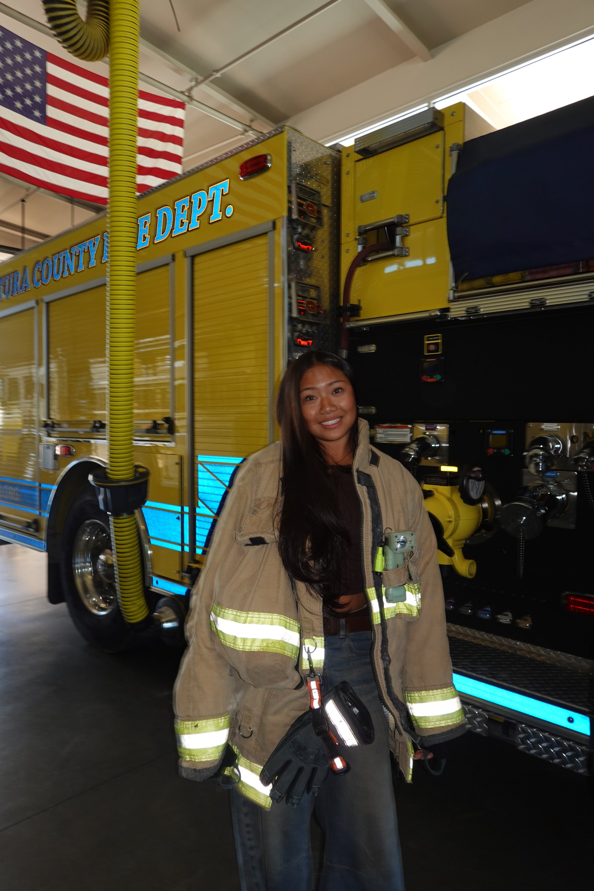
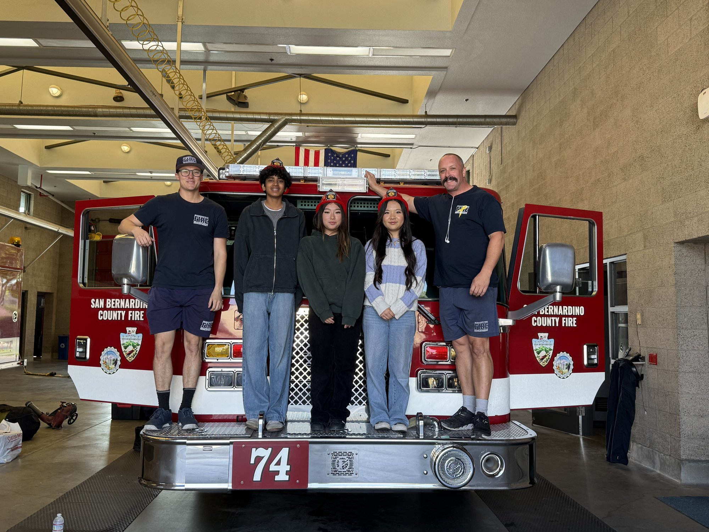

Started by students after the Palisades Fire.
In January 2025, the Palisades Fire tore through our Southern California community. We started Project Pulmonary for the crews who breathed it in.
It all started with the Palisades Fire.
On January 7, 2025, after eight months without measurable rain, Santa Ana winds gusting up to 80 mph drove a fire through Pacific Palisades, Topanga, and Malibu. It became the most destructive wildfire in the history of Los Angeles.
This was our home. For 24 days, firefighters worked inside that smoke to contain it. Watching them, we started asking what the smoke does to the people who breathe it for a living. Project Pulmonary is our answer.
- Acres burned
- 23,448
- Structures destroyed
- 6,845
- Lives lost
- 12
- Days to containment
- 24
Two students with a shared conviction.
Bettina Lee
Growing up as a Southern California native, wildfires were an inescapable reality. When the 2025 Palisades Wildfire devastated my SoCal community, I began to learn more about the carcinogens found in wildfire smoke. It was in that moment that I discovered the lung cancer risk associated with wildfire VOC inhalation and how often it is overlooked. These experiences inspired me to combine my passion for public health and lung cancer prevention with community service, founding Project Pulmonary to protect firefighter health, promote lung cancer prevention, and inspire the next generation of changemakers.
Elena
My grandmother was diagnosed with lung cancer only after it had already spread, as no one had screened her early enough. This precise detail became my conviction: catching disease early, before symptoms appear, is often the difference between treatable and terminal. When the Palisades wildfire devastated my community, Southern California, that conviction found new urgency. I watched firefighters inhale thick, carcinogenic smoke with no real protection and no system in place to track what that exposure would mean for their lungs years later. I founded Project Pulmonary because firefighters deserved protection at every stage: prevention before exposure, care after it, and policy to make that protection permanent.
Wildfire smoke, lung cancer, and the crews caught in between.
Fires are getting bigger, our home region sits at the center of them, and the people who fight them breathe in what causes the deadliest cancer in America.
-
01
124,990U.S. lung cancer deaths projected in 2026
The #1 cancer killer in America.
Lung cancer causes about one in five cancer deaths, more than colon, breast, and prostate cancer combined.
1 in 5 cancer deaths -
02
67%five-year survival when found early
Catching it early changes everything.
Once it spreads, survival drops to 12%. That’s why every delivery we make carries a screening reminder.
-
03
#1U.S. metro for homes at wildfire risk
Our home is at the center of it.
More than 245,000 homes in the Los Angeles metro face moderate or greater wildfire risk, more than any other metro in the country. It’s where both of our founders grew up.
California: 48% of all at-risk U.S. homes -
04
~2×western U.S. forest area burned since 1984
A warming climate is feeding bigger fires.
Human-caused climate change nearly doubled the forest area burned in the western U.S., an extra 16,000 square miles.
-
05
+43%lung cancer death risk for wildland crews
Their lungs pay the price.
Wildland firefighters face up to a 43% higher risk of dying from lung cancer, and career firefighters have a 14% higher cancer death rate overall.
Sources: American Cancer Society (2026) · ACS survival rates · CoreLogic 2024 Wildfire Risk Report · Abatzoglou & Williams, PNAS (2016) · Navarro et al., USDA Forest Service (2019) · NIOSH · CAL FIRE Palisades Fire incident
We work across schools, stations, and classrooms.

Chapters in schools
230+ student-led chapters in 40+ countries organize drives and outreach in their own communities.

Partnerships with stations
Chapters connect with local crews and deliver supplies in person, station by station.

Lessons in classrooms
K–8 students learn about lung health and write screening reminders to firefighters.
In their own words.
Our national team is student-run, top to bottom. Here's why they joined.
Hi, my name is Jaiden Bloodworth, and I'm so excited to be a part of the Project Pulmonary Executive Team. I serve as the Government Affairs Director, and my team will focus on lobbying government officials on behalf of every firefighter. I believe every firefighter should have the resources and support necessary to serve their communities, and that Project Pulmonary is the best way to help them. My team and I hope to raise awareness about hazardous environments and enhance cancer prevention through our governmental efforts. I hope that, through my participation, I will connect like-minded individuals to prevent future problems and provide current solutions in this field. I'm very excited to work with this team, and I look forward to what we accomplish in the future!
Hey, my name is Harshitha Venkatesan, and I'm so excited to be part of this initiative. I serve as the Community Outreach National Board Director, and what draws me most to Project Pulmonary is its focus on education, awareness, and making a real difference in people's lives. I think what Project Pulmonary does is really important because it teaches people about lung health, how to prevent problems, and helping spread important information about lung health and prevention. Being part of this also connects to what I want to do in the future because I'm interested in healthcare and helping people. I'm proud to be part of something that makes a difference in people's lives and supports our community!!
Hi my name is Christy Chen, I am so proud to be a part of Project Pulmonary. Project Pulmonary's mission is extremely inspiring and meaningful as it focuses on spreading awareness about lung health and cancer prevention as well as bettering the lives of firefighters. I love being able to do something and help out my community and especially our firefighters that work so hard to keep us safe.
Hi, my name is Siri Damu, and I'm really happy for the opportunity to be part of this. I think Project Pulmonary's mission is really meaningful because it focuses on spreading awareness and education about lung health and prevention, which is something that impacts so many people. My team works on creating podcasts and articles to help make medical topics more accessible and engaging. Being part of this connects a lot to my future goals, as I plan to pursue pre-med in college and eventually become a pediatric cardiologist. I'm really interested in combining education, advocacy, and patient care to make a meaningful impact in healthcare. Overall, I'm excited to be involved in something that aligns so closely with what I hope to do in the future.
I'm proud to be a part of an initiative that gives back to the community providing so much for us. Being in Project Pulmonary allows me to combine advocacy, service, and health education, building a future together where firefighters and families can have the support that they have long deserved.
Faces behind the mission.






Every chapter starts with one student.
Start one at your school, fund the next delivery, or bring Project Pulmonary to your department.
Project Pulmonary is a 501(c)(3). Every gift is tax-deductible.
Partners who make every drive possible